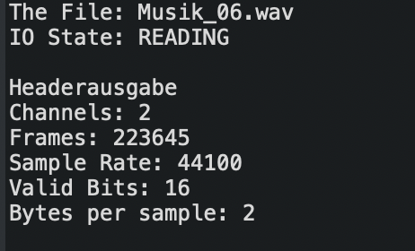

Headerangaben Musik_06
 Headerangaben Sound_06
Headerangaben Sound_06
1.a) Musikaufnahmen 16bit Auflösung:
1.b) Bescheibung zu unterschiedlichen Abtastfrequenzen:
Die Abtastfrequenzen sind unterschiedlich, da die Musikdatei verglichen mit der reinen Sprachdatei ein größeres Spektrum besitzt
und so bsw. mehr Frequenzhöhen und Frequenztiefen abgebildet werden können.
Der Mensch kann Frequenzen bis ca. 20kHz wahrnehmen.
Aus dem Grund werden Audioaufnahmen mit 44.1kHz bzw. 48kHz abgetastet.
Für die Sprahce hingegen ist eine Abtastfrequenzen von 8khz ausreichend.
1.c) Headerangaben
Beschreibung der Headerangaben:
- Channels: wie viele Kanäle (Mono=1Kanal, Stero=2Kanäle)
- Frames: die Anzahl an einzelnen Frames (Abtastpunkte)
- Sample Rate: wie oft wird der Audio-Pegel in einer Sekunde erfasst (Abtastrate)
- Valid Bits: wie viel Speicher f¨r einen Sample-Wert genutzt werden kann
- Bytes per sample : Speicher pro Sample in Byte (1 Byte = 8 Bit)
Headerangaben Sound_06
1.d) Bitratenberechnung
(Bitrate = Kanäle x Samplerate x Auflösung)
-Für Musik_06.wav : 2 Kanäle x 16 Bit x 44,1 kHz = 1411,2 kBit/s
-Für Sprache_06.wav : 1 Kanal x 16Bit x 8 kHz = 128 kBit/s
Rauschen
Bescheibung
Loesung
Loesung
Loesung
Loesung